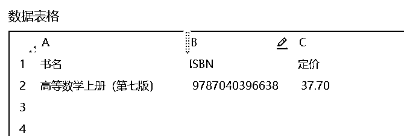

来源：https://ngppuxr565.feishu.cn/docx/F9zudtAHnoZkERx8NgScGvZqnGg
大家好呀，这里是生财新圈友，一名程序员，目前在小红书和闲鱼上探索新的可能性，包括项目的闭环放大、工具类开发。
我们都知道，每个项目或多或少都需要我们去做一些重复性的操作，如做中医号剪视频时常用到的视频批量混剪工具，小红书平台的后羿采集器。一个恰到好处的工具能够解放我们的双手，帮我们省下重复性工作的时间，有更多时间去思考、选品、生活。
在我第一次打算使用抖音去水印工具，拿到同行作品原图时，从上到下看了下真的一点抖音水印都没有的时候，觉得太神奇了，那一刻我真的觉得这个工具真的泰裤辣！
每个人都有自己的赛道定位，大部分工具(视频混剪、后羿采集器)可以解决我们的90%的通用性重复性工作问题，那剩下的10%的非通用性问题怎么办？
举个栗子：
在这次的闲鱼二手书航海行动中，得益于华少开发的闲管家工具，实现了以下功能：
搞定上书（累）
搞定订单（乱）
搞定客户咨询（烦）
有此神器在手，节省了非常多的时间，我们可以把所有的精力放在选品上。殊知时间就是生命。
一个好用的工具的重要性可想而知！
但是在此过程中，每个人的赛道不一样，有的人聚焦小说类，有的人聚焦绘本，而有的人聚焦教材类。赛道多样化，需求多样性，赛道和需求的不可预期性，做出一个通用的工具可能性大大降低。投入产出比非常低。掌握了影刀工具，在个性化需求中也能快速解决，提高成产力，节省时间！
举个例子，在本次二手书上架过程中，需要我们手动找到详情页上的ISBN号，圈友是做大学教材类的，因而要针对大学教材页面去过滤出想要上架的书本，接着一个个点进去详情页查看ISBN号和定价参考。量大之后就会出现如下场景:
在提出需求的那一刻，没有人比你更懂重复性工作的枯燥，没有人比你更想摆脱这种重复性工作的痛苦
怎么解决？
GPT可以充当大脑，
RPA可以充当手脚！
授人与鱼，不如授人与渔！
用影刀RPA，仅仅十来个代码逻辑便可解决这个工具，不用学习众多的语法，复杂的格式！就可以解决在任何平台中遇到的重复性工作问题。
不仅仅是闲鱼，回顾下小红书、抖音等平台上还有什么可以解放双手的重复性工作？
蝉小红工具中，专业版用户无法导出品类排序表格，我们还有什么办法？影刀抓取！
这是不仅是一篇工具分享文，还是一篇技术教学文，带领小白上手影刀自动化工具，让我们在成为超级个体的路上更进一步！
用了的小伙伴都说嘎嘎好，在短时间可以直接铺多个号！
废话不多说，先看成品：
爬下来的效果如下图，这样可以简单获取ISBN号、书名以及定价信息去上架了。截图仅呈现10条
https://www.bilibili.com/video/BV1mc411M7n7/?vd_source=1ff29a067cb6004944b37448caaa54a1
下载链接: https://api.winrobot360.com/redirect/robot/share?inviteKey=47a8b68841cd6795
打开方式:下载后用影刀打开即可
在得到初步的需求后，我们需要进行需求拆解分析：
主需求：从孔夫子网获取ISBN和价格
工具：影刀
流程：
获取单一书本流程 循环获取书本流程
有了初步的构思后，接着分析尝试下:熟悉影刀平台。首先在B站上粗略看了下影刀的官方介绍及第一个demo实例：
B站教程链接： https://www.bilibili.com/video/BV1734y1j7iJ/?spm_id_from=333.337.search-card.all.click&vd_source=1ff29a067cb6004944b37448caaa54a1
流程操作：

| 序号 | 功能 | 描述 |
|---|---|---|
| 1 | 打开网页 | 打开孔夫子大学教材栏目网站 |
| 2 | 点击元素 | 点击高等数学，会跳出一个新的标签页 |
| 3 | 获取网页对象 | 获取当前所有打开的标签页 |
| 4 | 设置变量 | 设置最后一个标签页的名字为高等数学详情页 |
| 5 | 等待网页加载完成 | 等待高等数学详情页加载完成 |
| 6 | 获取元素信息 | 获取书名、ISBN、定价 |
| 7 | 写入数据表格 | 写入表格 |
结果如下：
1.加入每一行的循环元素，循环抓取当前页列表的每一本书
2.最后加入每一页的循环元素，从第一页轮询到最后一页，循环抓取
在开发调试过程中可能会遇到如下问题，其可参考的解决方案如下：
问题1： 每本书详情页的数据排版不相同，直接抓取ISBN和定价可能会抓取失败
解决方案：直接抓取整个详情页区块的数据，再对数据用正则表达式的形式进行筛选过滤出ISBN和定价的字段
公式： ISBN:(.*)代表匹配含有ISBN:的字符串，并输出：后面的数据
举例： 输入：”ISBN:123456789” 输出：”123456789”
问题2： 在抓取标题时出现抓取失败，获取不到字段
解决方案：1.可能是标签页选错，没有选择跳转后的新标签页，选择好正确的标签页即可
2.可能是网络较差，在网页数据还没刷新时就去获取字段，将等待元素存在由默认20s改为50s或者其他合适的值
到这整个流程就结束了。入门编写代码总会遇到奇奇怪怪的问题，尽量先抄成功案例，一步一步跟着走，跑起来一个自己写的程序后会有很强的成就感，再去优化流程，编写自己想要的逻辑。
大家如果有什么需要，也欢迎和我交流。